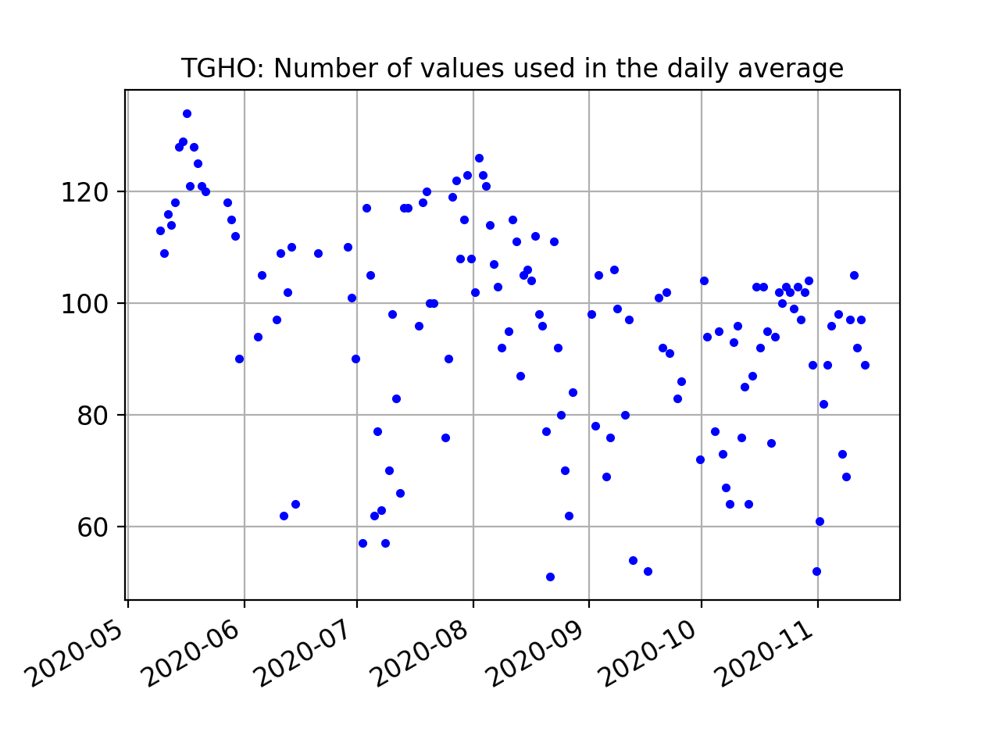
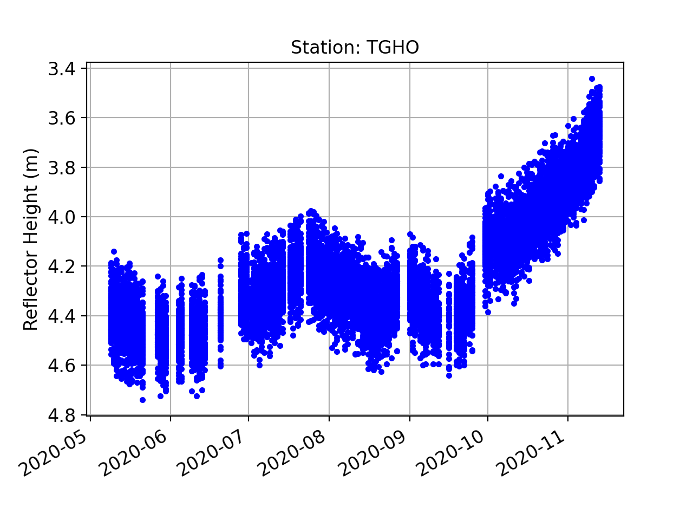

Lake Taupo

Photo credit: Simon Barker
Station Name: tgho
Location: North Island, New Zealand
Archive: Geonet
DOI: N/A
Ellipsoidal Coordinates:
Latitude: -38.813
Longitude: 175.996
Height: -38.813 m
Station Page at Nevada Geodetic Laboratory
Data Summary
Station tgho is operated by GNS. The GNSS site is located on a platform in Lake Taupo. It records standard GPS and Glonass signals at a low sample rate (30 sec). The site could be significantly improved with a newer receiver that tracks modern signals at a higher sample rate.
Take a Quick Look at the Data
Begin by making an SNR file. Use both GPS and Glonass and set the archive to nz:
rinex2snr tgho 2020 300 -orb gnss -archive nz
quickLook tgho 2020 300 -e1 5 -e2 15

The clutter near the monument produces noise at the small RH values. A better result can be found if those values are eliminated by setting h1 to 2. We also extend h2 to 8.
quickLook tgho 2020 300 -e1 5 -e2 15 -h1 2 -h2 8
{kind=link}
Now try looking at the periodogram for L2:
quickLook tgho 2020 300 -e1 5 -e2 15 -h1 2 -h2 8 -fr 2

These results are not very compelling for a variety of reasons. The GPS L2 data will not be used in subsequent analysis. Next, check the two Glonass frequencies:
quickLook tgho 2020 300 -e1 5 -e2 15 -h1 2 -h2 8 -fr 101

quickLook tgho 2020 300 -e1 5 -e2 15 -h1 2 -h2 8 -fr 102

The QC metrics from Glonass 101 are helpful for setting the azimuth mask:

We will exclude 135-225 degrees in azimuth. We will require an amplitude of 9 and a peak to noise ratio of 3.0.
Analyze the Data
Use make_json_input to set up the analysis parameters. Set the elevation and reflector heights as in quickLook. The peak to noise ratio and required amplitude can be set on the command line.
make_json_input tgho -38.8130 175.9960 385.990 -h1 2 -h2 8 -e1 5 -e2 15 -peak2noise 3 -ampl 9
The azimuth mask has to be set by hand to exclude empty regions and azimiths with poor retrievals. Glonass signals (frequencies 101 and 102) were added and GPS L2/L5 were removed.Sample json
Then make SNR files for ~six months:
rinex2snr tgho 2020 130 -archive nz -doy_end 319 -orb gnss
The output SNR files are stored in $REFL_CODE/2020/snr/tgho.
Now run gnssir for these same dates:
gnssir tgho 2020 130 -doy_end 319
To look at daily averages, use the utility daily_avg. The median filter is set to allow values within 0.25 meters of the
median, and the minimum number of tracks required to calculate the average is set to 50 tracks.
daily_avg tgho .25 50
The number of retrievals each day is show here:
{kind=link}
All retrievals are shown here:
{kind=link}
Note in particular that there are quite a few data outages in this series, which means the RINEX files were missing from the NZ archive.
Finally, the average RH plot:

Although Taupo is in a volcanic caldera, lake levels are determined by seasonal processes such as evaporation, precipitation, input from local drainages, and outflow. The Waikoto River is sole river draining the lake, and river flow is regulated by a series of hydroelectric dams.